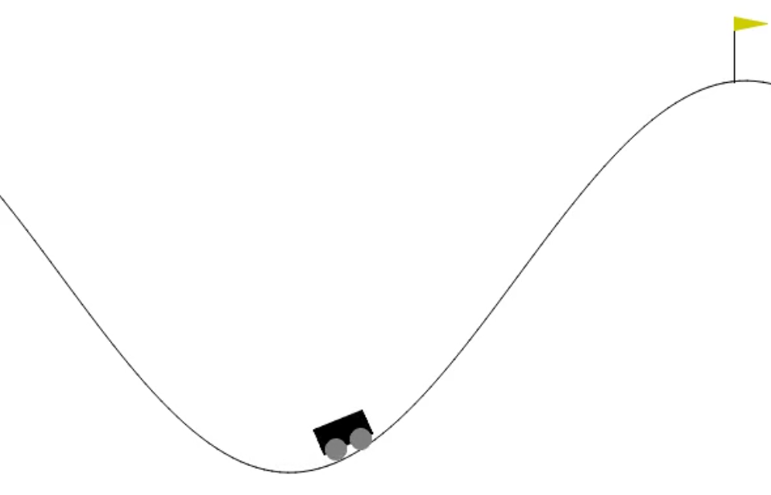

Mountain Car & Neural Networks (Soon Available)
In this project, I attempt to solve a classical benchmark problem for reinforcement learning algorithms using neural networks provided by the torch.nn module. In this attempt, I follow an actor-based on policy method where the policy is parameterized by a function approximation, namely, an approximation using neural networks. The advantage of this approach over Q-learning is that the stochasticity of the policy allows exploration.
 Mountain Car is a deterministic multidimensional problem where a car is at the bottom of a valley with the goal of reaching the flag on the right hill. The strategy space consists only of the acceleration of the car in either direction of the valley. The catch is, that the car is underpowered, so it will not be able to just go up the steep hill. Consequently, the car must learn to harness the potential energy by driving up the opposite hill before it can reach the objective at the top of the right-hand hill. It follows that the objective function is not straightforward and that exploration off path is very welcome.
The gym module provides two environments for mountain car: one with discrete actions and one with continuous actions. In this project, the former is sought to be solved (gym documentation).